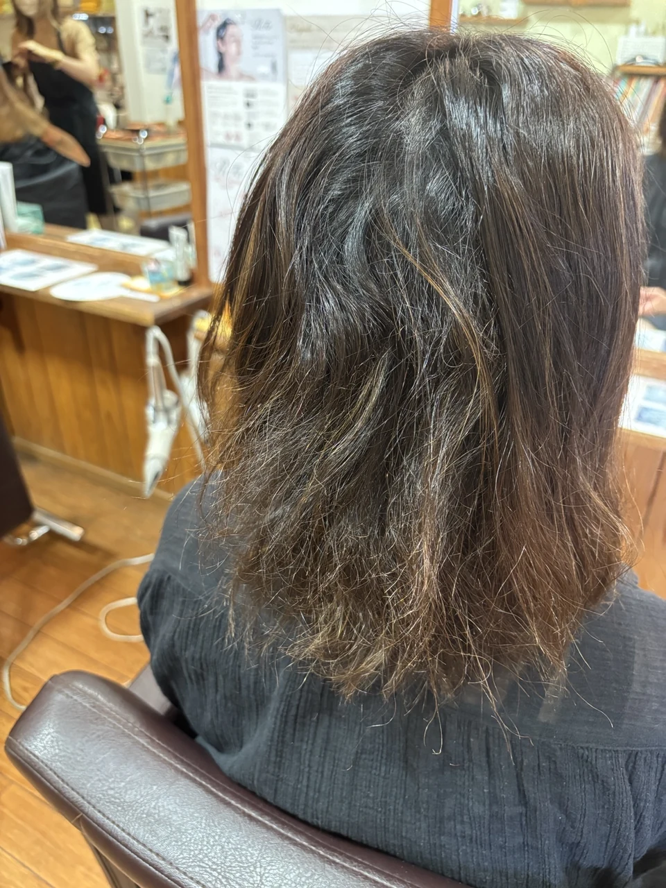
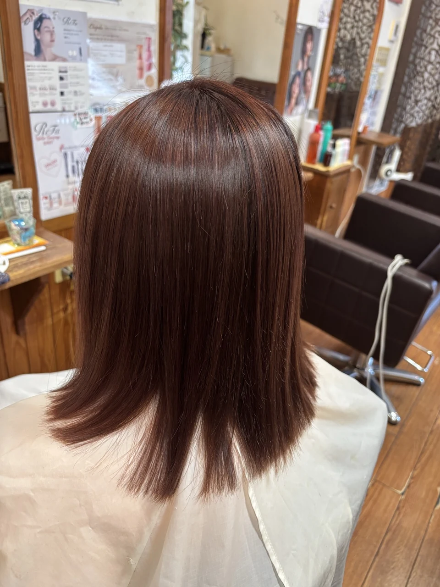
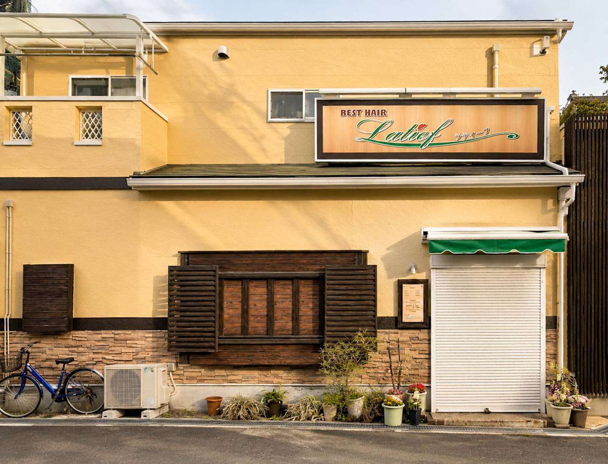

東大阪・金岡 / 弥刀・久宝寺口
うねり、広がり、年齢とともに感じる髪の変化。
髪の状態とこれまでの履歴を大切に、
毎日の扱いやすさを一緒に考えます。
ネット予約は、同じ店舗の「Best Hair Latief」石田学指名ページへ移動します。メニューが未定の方・ブリーチ履歴のある方は、まずLINEへ。

REAL SALON WORK
酸性縮毛矯正に、エイジング毛対策の
髪質改善トリートメントを組み合わせた施術です。




実際の施術写真です。髪を生成し直す加工やツヤの追加は行っていません。撮影角度・光・長さは写真ごとに異なります。仕上がりには個人差があり、同じ結果を保証するものではありません。
FIND YOUR HAIR CARE
名前だけでメニューを選ばず、いま気になることから。
01
以前よりうねる、白髪染めと両立したい。年齢だけで決めず、髪の状態と履歴から考えます。
エイジング毛について →02
手触りを整えたいのか、癖を扱いやすくしたいのか。希望からメニューを選びましょう。
施術の選び方を読む →03
ブリーチやハイライトがあっても、まずは相談を。施術の可否や範囲を一緒に確認します。
ブリーチ毛の相談について →OUR APPROACH
Latief Atelierは、Best Hair Latief店舗内の別ブランド。
美容師歴25年の石田 学がご相談を承ります。
根元と毛先の違い、カラーや縮毛矯正の履歴、普段のお手入れ。希望と現在の状態をすり合わせ、一人ひとりの施術を考えます。

MENU
2026年11月16日、予約ページ掲載の通常料金を確認。カットの有無・組み合わせ・クーポンの条件は、予約ページまたはLINEでご確認ください。

ACCESS & HOURS
Latief Atelier / Best Hair Latief店舗内
大阪府東大阪市金岡3-27-25
近鉄弥刀駅・久宝寺口駅から徒歩約7分 / 駐車場あり
上記は石田 学のAtelier営業枠です。施術に必要な時間により受付可能な日時が異なります。祝日・臨時休業を含め、予約ページまたはLINEでご確認ください。
Googleマップで場所を見る ↗QUESTIONS
ホットペッパーでは予約完了画面と予約内容をご確認ください。LINE・Googleフォームは日時を調整し、当店から本予約確定の連絡をお返しします。
はい。メニューが決まっていなくても大丈夫です。髪のお悩みや施術履歴を分かる範囲でお聞かせください。
ご相談いただけます。写真だけで施術可能とは断定せず、実際の髪の状態を確認して、施術の可否・範囲や見送る選択肢も含めて考えます。まずはLINEへご連絡ください。
現在は現金のみのお支払いです。変更がある場合はホームページまたはLINEで案内します。
RESERVATION & CONSULTATION
メニューが決まっている方は空席確認へ。
迷う方は、髪のお悩みとこれまでの履歴をLINEでお聞かせください。
ネット予約は、同じ店舗の「Best Hair Latief」石田学指名ページへ移動します。メニューが未定の方・ブリーチ履歴のある方は、まずLINEへ。
LINE・Googleフォームは希望日時を伺い、調整後に当店から本予約確定の連絡をお返しします。ホットペッパーでは予約完了画面と内容をご確認ください。
予約希望フォームを開く ↗JOURNAL
施術の考え方やお知らせは、note・SNSでも。